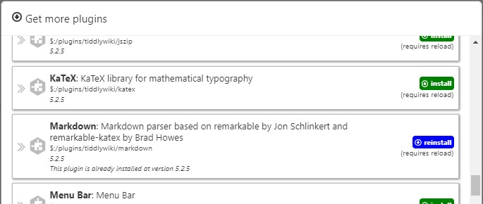
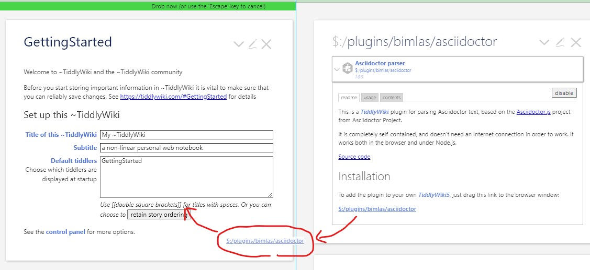
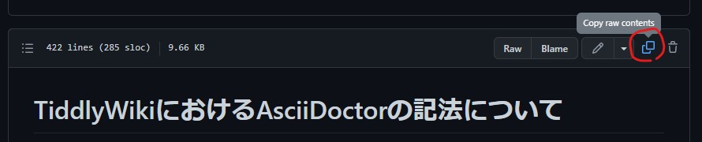
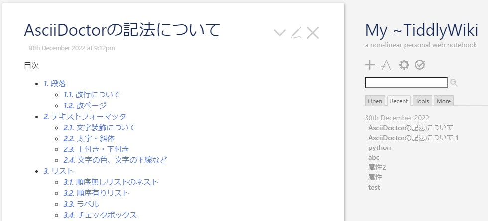
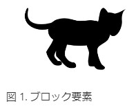
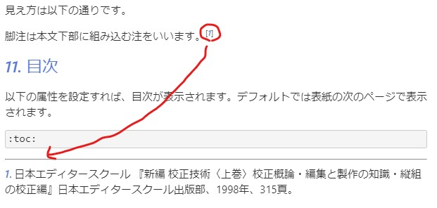

オフラインで使える個人用Wiki「TiddlyWiki」のTiddler（記事）は独自の記法で記述します。公式プラグインを適用することでMarkdown記法を使うことも可能です。

それ以外にもAsciiDoc記法も使うことが可能です。
AsciiDocは、Markdownと同じ軽量マークアップ言語のひとつです。
オライリーメディアから出版される書籍及び電子書籍の中にはAsciiDocで組版されたものもあるくらい本格的な出力が可能です。
Markdownでは物足りない、でもTeX は難しくて無理という人には、良い選択かもしれません。
AsciiDoc記法のプラグインは、Bimba Laszlo（bimlas）氏のAsciiDoctor parserを使います。以下に利用手順を説明します。
利用手順
まず、AsciiDoctor parserにアクセスします。

$:/plugins/bimlas/asciidoctorを自分のブラウザ ウィンドウのTiddlyWiki5にドラッグ＆ドロップし、インポートするだけです。
ファイルを保存し、再読み込みすれば、正常にインポート出来ていれば、のアイコンが表示されています。
このアイコンをクリックすれば、AsciiDoc記法のTiddlerを新規作成することができます。
記法については、Asciidoctor 文法クイックリファレンス(日本語訳)を見てください。
上記は少し古いので、最新のクイックリファレンスは本家のものを見てください。
あと、こちらに私がTiddlyWikiで試してみたサンプルがありますので、参考にしてください。

新規にAsciiDoc用のTiddlerを作成した後、「Copy row contents」でクリップボードにコピーして、Tiddlerにペーストすれば確認できます。
ちなみにAsciiDocはGitHubで表示することができることが分かります。AsciiDocはマイナーではないのです（？）
ひとこと
AsciiDoc記法の全てではありませんが、たいていのものは使えます。
AsciiDoctor parserの「usage」タブにあるように、「Include (transclusion)」（埋め込み）や「Internal links」（Tiddler内リンク）はうまく動作しないようです。
とは言え、「TOC（Table Of Contents）機能」、「図表の自動採番機能」、「脚注機能」などはやっぱり強力だなと感じます。
TOC機能

図表の自動採番機能

脚注機能

TiddlyWikiをブラウザ上でしか使わないならTiddlyWiki記法が安定していると思います。
しかし、TiddlerをPDF出力し資料として他の人に渡すような使い方をする場合や、AsciiDocを簡単に利用したい場合には、とても有効なプラグインだと思います。
Ruby + asciidoctor-pdfは準備が大変ですよね。